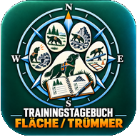

Fläche · Trümmer · ergänzendes Training
Dokumentation nach Trainingsbereich – für Ausbildung, Auswertung und Einsatzvorbereitung. Mehrere Übungsblöcke am selben Tag, Trainingstage im Überblick und eine automatische Auswertung.
Nach dem ersten vollständigen Laden über den App-Link auch offline nutzbar. Wetter und Ortsnamenabruf benötigen Internet; die Standortermittlung benötigt deine Freigabe.
Optionaler, nachholbarer Austausch. Andere RH-Apps müssen weder installiert noch gleichzeitig aktuell sein. Ältere Feldstände überschreiben keine neueren.
Die Adresse und der Heimatpunkt bleiben ausschließlich in diesem Browser. Sie werden weder synchronisiert noch in Sicherungs- oder Excel-Dateien geschrieben. Für die automatische Entfernungsberechnung den Heimatpunkt einmal zu Hause setzen.
Angaben gemäß § 5 Digitale-Dienste-Gesetz (DDG):
Michaela Weiße
Brunnenstraße 6
34369 Hofgeismar
Kontakt: E-Mail mweisse@outlook.de · Telefon +49 171 408 2366
Verantwortlich für den Inhalt nach § 18 Abs. 2 Medienstaatsvertrag (MStV): Michaela Weiße, Anschrift wie oben.
Es handelt sich um ein privates, nicht kommerzielles Angebot. Es ist keine offizielle Anwendung des Deutschen Roten Kreuzes.
Verantwortliche: Michaela Weiße, Anschrift und Kontakt siehe Impressum.
Speicherung in der App: Alle Einträge, Profile und Einstellungen werden ausschließlich lokal im Browser dieses Geräts gespeichert (localStorage). Sie werden nicht an die Anbieterin übermittelt. Sicherungs- und Exportdateien entstehen nur auf Ihre Veranlassung und verbleiben bei Ihnen.
Bereitstellung über GitHub Pages: Die App wird über GitHub Pages (GitHub, Inc., USA) bereitgestellt. Beim Aufruf verarbeitet GitHub technisch notwendige Verbindungsdaten, insbesondere die IP-Adresse, in Server-Protokollen. Näheres in der Datenschutzerklärung von GitHub.
Optionale Online-Funktionen: Nur wenn Sie „Wetter online abrufen“ auslösen, fragt der Browser nach Ihrem Standort. Die Koordinaten werden dann an Open-Meteo (Wetterdaten) und BigDataCloud (Ortsbezeichnung) übermittelt. Ohne diese Funktion findet keine Übermittlung statt.
Die App setzt keine Cookies und verwendet keine Analyse- oder Werbedienste.
Ihre Rechte: Auskunft, Berichtigung, Löschung, Einschränkung der Verarbeitung, Widerspruch und Datenübertragbarkeit nach der DSGVO. Lokale Daten können Sie jederzeit selbst löschen, etwa über die Browsereinstellungen. Beschwerden sind bei einer Datenschutz-Aufsichtsbehörde möglich, zum Beispiel beim Hessischen Beauftragten für Datenschutz und Informationsfreiheit.
© 2026 Michaela Weiße. Alle Rechte vorbehalten. Programmcode, Texte und Gestaltung dürfen ohne Zustimmung nicht vervielfältigt oder verändert veröffentlicht werden.
Wetterdaten: Open-Meteo.com (CC BY 4.0).
Die App ist eine Dokumentations- und Orientierungshilfe. Sie ersetzt keine fachliche Ausbildung, keine Anweisung der Ausbilder oder der Einsatzleitung und keine tierärztliche oder medizinische Beurteilung. Für Richtigkeit und Vollständigkeit wird keine Gewähr übernommen.
| Alt + 1 | Ansicht „Training erfassen“ |
| Alt + 2 | Ansicht „Trainingstage“ |
| Alt + 3 | Ansicht „Auswertung“ |
| Alt + → | Nächster Schritt im Formular |
| Alt + ← | Vorheriger Schritt im Formular |
| Strg/Cmd + Enter | Eintrag speichern (auf letztem Schritt) |
| Esc | Bearbeitung abbrechen / dieses Fenster schließen |
| Alt + H | Dieses Fenster ein-/ausblenden |